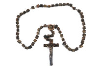

Sunday, September the 19th, 2004
back to: title, date or indexes
“This is the place where it goes clunk,” said the prize-winning scientist, pointing with his stick to an otherwise dull part of the revolutionary new machine. His audience gasped. It was the climax of his lecture; all that remained were a few words of summing up, then the astonished listeners would scatter, like chaffinches from a treetop after a gunshot, and the scientist could put his stick away for another week. But not today! For lurking incognito in the group was Father Desperado Sepulveda, the so-called Milquetoast Jesuit, sent on a mission from Paraguay to ferret out the truth. He cleared his throat. “I think,” he said, in a whisper like the hiss of an asp, “I think we would all like to hear it go clunk.” The scientist's brow furrowed and his mouth felt suddenly dry. “It is one thing to be told that it goes clunk,” continued the relentless Jesuit, “But something else entirely to experience for ourselves the sound of it going clunk.” He was an empiricist. The rest of the crowd began to mutter excitedly. They had not thought to be so forward themselves. The scientist spluttered, but it was too late, for Father Sepulveda had already pressed the big yellow knob that made it go clunk. Forensic teams later recovered his rosary beads from the rubble.

The Milquetoast Jesuit's rosary beads in happier days